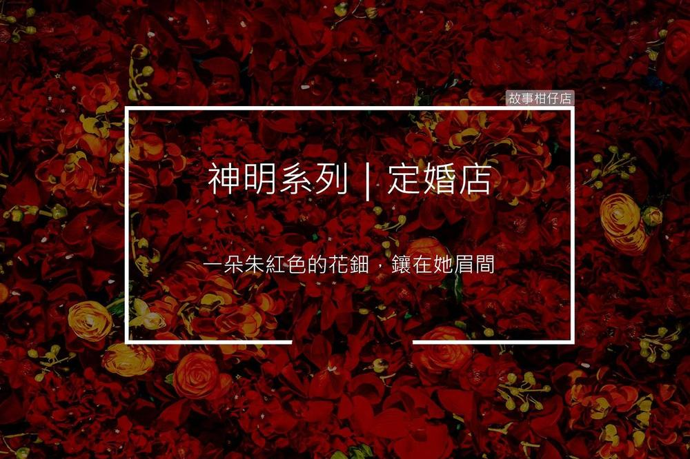

定婚店

黑貓：您牽過最難忘的一次紅線經驗是什麼呢？
月老：不就那個頑固小兒！
〈定婚店〉
天方矇亮，王府上下張燈結綵，好不熱鬧。
屋室內，王婉端坐鏡前，讓幾個丫鬟圍著梳妝。約莫十六七的年紀，容色秀麗，緊鎖的眉頭卻透著清冷。
一朵朱紅色的花鈿，鑲在王婉眉間，與灑落的日光，相互輝映。
「小姐，您今日真是好看！」一丫鬟望著王婉，忍不住哭道：「可惜這眉頭，讓那歹人給留了疤痕！」另一丫鬟聞言，連忙喝斥：「今日可是小姐的大喜之日，莫提那傷心往事！」
王婉輕撫眉間的花鈿，慘淡一笑，並無回話。
昏時，王、韋兩家締結姻親，新郎倌韋固，身著華美喜服，親迎刺史之女。
沿路鑼鼓喧騰，陣仗非凡。陣中，卻有一老者緩緩逆行其間。
老者長鬚白髯，一手持杖，另手挽著殷紅絲線。他轉頭看向婚隊，深深地嘆了一口氣，便消失在熙攘街頭。
是夜，帳幕低垂，新郎新娘對坐，同飲合巹。燭影搖曳，照得新娘王婉嬌俏可人，韋固一時心蕩神馳，伸手要握王婉手腕。
不料，嬌美新娘突從袖口掏出匕首，刀光凌厲，直直刺向韋固。韋固大驚，踉蹌閃過，緋紅婚服劃出長長一道口子。
他即時扶桌穩住，目露懼色，問道：「妳乃刺史之女，何故做出此事？」
王婉握緊匕首，拍掉花鈿，喝道：「你可還記得十四年前菜肆女娃？」
朱紅花鈿倏地跌落，王婉秀麗眉宇間，赫然出現一洞窟窿。
「當年你欲取我性命，若非王府收養，我早已...」王婉憶起幼時慘劇，咬牙怒道：「我日日尋你，便是求得今日，當報此仇！」
「妳...」韋固一怔，兩行淚水驟然落下。
「你放心，你我今日已是夫妻，」王婉再舉匕首，「待我此仇一報，我便立刻隨你同去！」語畢手起，一只香囊從懷中滾落。
囊中散出一捆殷紅絲線，隨著刀光，一齊落向韋固的胸膛。
定婚店（節錄）
貞觀二年，杜陵韋固，將游清河，旅次宋城南店。遇老人倚巾囊，向月檢書。問其書，曰：「天下之婚牘耳。」固喜曰：「固妻安在？可見乎？」及明，入菜市，有眇嫗，抱三歲女來。老人指曰：「此君之妻也。」固怒，老人遂隱。
固磨一小刀，付其奴曰：「汝素幹事，能為我殺彼女，賜汝萬錢。」奴曰：「諾。」明日，袖刀入菜肆中，於眾中刺之而走。
又十四年，刺史王泰，以為能，因妻以女。可年十六七，容色華麗。固稱愜之極。然其眉間常貼一花鈿。固逼問之，妻潸然曰：「妾郡守之猶子也，非其女也。時妾三歲時，乳母陳氏抱行市中，為狂賊所刺。刀痕尚在，故以花子覆之。」固曰：「陳氏眇乎？」曰：「然，何以知之？」固曰：「所刺者固也。」乃曰奇也。宋城宰聞之，題其店曰「定婚店」。
您今天，許願了嗎？
故事柑仔店的神明集郵冊，
邀您一起許個願。
★ 更多的月老
極短篇：
人物專訪：